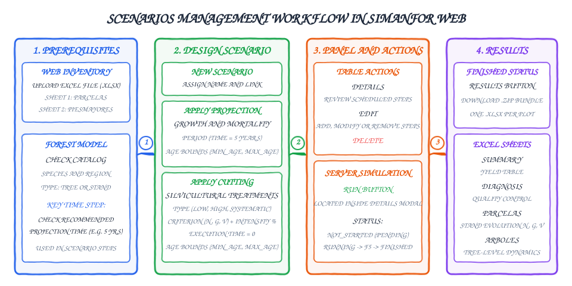

Management scenarios on the web platform
A silvicultural scenario in SIMANFOR is the chronological sequence of events describing the productive cycle of a forest stand. It combines growth projections over time with cutting operations (thinnings or cleanings) scheduled according to technical criteria.
Users manage and run simulations through the web platform (simanfor.es) without writing code or manually editing configuration files. From the browser, you can link an inventory, associate it with a forest growth model, configure the silvicultural treatments, launch the simulation, and download the results.
Table of contents
- General workflow
- Prerequisites on the web platform
- Creating a new scenario
- Configuring management steps
- Multi-stand simulations and age bounds
- Control panel and table options
- Contents of the results bundle
General workflow
The diagram below outlines the four primary phases of scenario management on the web platform:

- Prerequisites: confirm the inventory is uploaded and check the recommended projection time step in the model datasheet.
- Scenario design: sequentially add the required projections and cuttings.
- Panel and actions: verify the steps under
detailsand start the simulation run. - Results: download the compressed file containing the Excel workbooks (one file per plot).
Prerequisites on the web platform
Before creating a scenario in SIMANFOR web, prepare two items:
1. Inventory uploaded to the user account
The inventory contains the initial forest measurements. Upload it via the Inventories section in the sidebar as an Excel file (.xlsx).
The workbook must contain at least two sheets with standard names:
- Parcelas: defines stand or sample plot characteristics (
plot_id, area, age, or site index when available). - Árboles (or
PiesMayores): contains tree-level measurements for individual-tree models (tree_id,dbh,height, species code, and expansion factorexpan).
Uploaded inventories remain private to your user account for simulation use. For further details on inventory formats, refer to the Inventories documentation.
2. Selecting and reviewing the forest model
The Models section lists all available models on the platform. Before designing a scenario, review the technical documentation in the Models index to check three aspects:
- Compatibility: verify that the model covers the tree species and geographic origin of the plots.
- Required data level: determine whether the model is tree-level (requiring diameter and height for each tree) or stand-level (operating on aggregate variables such as basal area and density).
- Recommended projection time: this parameter is essential. Growth and survival submodels are calibrated using permanent sample plots remeasured at specific intervals (typically 5 or 10 years). To maintain dasometric and mathematical consistency, projections in the scenario should use this interval as their base time step.
Creating a new scenario
Once the inventory is ready and the model chosen, start from the sidebar:
- Open the Scenarios section.
- Click the top button Add new scenario.
- Complete the initial form fields:
- Name: enter a descriptive title to identify the run in the table (for example,
Pinus pinaster - Low thinning 20%). - Initial inventory: select the file uploaded earlier. Use the brown selector button to switch files if needed.
- Projection model: select the target forest model.
- Name: enter a descriptive title to identify the run in the table (for example,

Confirming these settings automatically configures data loading and model initialization, leaving the builder ready for silvicultural steps.
Configuring management steps
Build the scenario by adding operations chronologically with the Add next step button. Each step represents an event in the forest stand and belongs to one of two categories:
Growth projections
A projection advances the simulation clock. During this step, the engine evaluates diameter increment, height growth, natural mortality, and ingrowth.
To schedule a projection, click Apply Projection and configure its variables:
- Execution period (
time): the number of years the stand will grow. This should match the recommended projection interval from the model documentation (for example, 5 years). To simulate 20 years without intermediate interventions, schedule 4 consecutive 5-year projections rather than a single 20-year step. The model interface suggests recommended projection periods on the left. - Age bounds (
min_ageandmax_age): optional filtering parameters. They restrict growth execution to plots whose age falls within the specified range. If a plot falls outside, the projection step is skipped for that plot. These bounds allow running one scenario across plots with different initial ages while keeping biological behavior consistent.

Cuttings and silvicultural treatments
A cutting extracts trees to manage stand competition and produce timber. Unlike projections, cuttings do not advance biological time; they represent instantaneous events.
To schedule a cut, click Apply Cutting and set the following parameters:
- Harvest model: dropdown list of cutting types. Available options depend on the model level:
- Individual-tree models: thinning from below, thinning from above, systematic thinning, cuttings with future crop tree retention, or species-directed cuts in mixed stands. For complete explanations, see the Harvest models documentation.
- Stand-level models: stand-level reductions that decrease total basal area or volume without selecting individual stems.
- Execution period (
time): keep this set to 0. Cuttings are instantaneous events. A value above 0 causes the engine to calculate growth concurrently during tree removal. - Cutting criterion (
type): the metric used to calculate removals:- Density (
Number of trees/Density): percentage of trees per hectare removed. - Basal area (
Basal area): percentage of basal area removed ($G$ in m²/ha). - Volume (
Volume): percentage of standing timber volume removed ($V$ in m³/ha).
- Density (
- Cutting intensity (
percent): exact percentage of the chosen criterion to harvest (from 1 to 100). - Age bounds (
min_ageandmax_age): age window within which the cutting applies. These bounds are useful when dealing with unevenly aged stands, such as applying a thinning only to mature plots while skipping younger ones.

Simulating semi-systematic thinnings
The web interface does not provide a single button for semi-systematic thinnings, but you can reproduce them accurately by chaining two consecutive steps at the same age:
- A systematic cutting representing rack or corridor opening (for example, harvesting 1 out of 5 rows, equivalent to a 20 % systematic cut).
- A subsequent thinning from below applied to the remaining trees between corridors, using the desired residual percentage.
If you make a mistake while setting up a step, remove it using the Remove step button. Once the schedule is complete, click Accept to save the scenario.
Multi-stand simulations and age bounds
Inventories often contain multiple stands with different initial ages (for instance, plots aged 20, 32, 41, and 47 years). Rather than creating a separate scenario for each stand, SIMANFOR applies a single scenario across all plots using operational bounds (min_age and max_age).
Engine evaluation rule
When processing a plot at any step, the simulator verifies whether the current plot age satisfies:
$$\text{min_age} \le \text{Plot age} \le \text{max_age}$$
- If the age is within the interval, the operation (cutting or projection) executes normally.
- If the age falls outside, the operation is skipped for that plot, and the engine moves directly to the next step.
Setting tolerance margins
Because plot ages in field inventories rarely align with exact multiples of the projection cycle (such as a 32-year-old stand under a 5-year step), set a tolerance window of 2 to 3 years above and below the target age.
Practical example: silvicultural schedule for Pinus pinaster
Consider an 80-year rotation for Pinus pinaster with the following silvicultural schedule:
- Age 20: initial cleaning (if density exceeds 1,500 trees/ha).
- Age 40: first thinning (38 % removal via semi-systematic thinning).
- Age 50: second thinning from below (40 % stem removal).
- Age 65: third thinning from below (27 % stem removal).
- Age 80: rotation age.
Translating this prescription into a multi-stand scenario with a 5-year step yields the following schedule:
| Step | Operation | Type / Treatment | Criterion and intensity | Standard age | Programmed bounds (min_age - max_age) |
|---|---|---|---|---|---|
| 1 | Projection | 5-year growth | - | 20 to 25 | 17 to 23 |
| 2 | Projection | 5-year growth | - | 25 to 30 | 22 to 27 |
| 3 | Projection | 5-year growth | - | 30 to 35 | 27 to 32 |
| 4 | Projection | 5-year growth | - | 35 to 40 | 32 to 37 |
| 5 | Cutting | Systematic (racks) | $N = 19\,\%$ | 40 | 37 to 42 |
| 6 | Cutting | Thinning from below | $N = 24\,\%$ | 40 | 37 to 42 |
| 7 | Projection | 5-year growth | - | 40 to 45 | 37 to 42 |
| 8 | Projection | 5-year growth | - | 45 to 50 | 42 to 47 |
| 9 | Cutting | Thinning from below | $N = 40\,\%$ | 50 | 47 to 52 |
| 10 | Projection | 5-year growth | - | 50 to 55 | 47 to 52 |
| 11 | Projection | 5-year growth | - | 55 to 60 | 52 to 57 |
| 12 | Projection | 5-year growth | - | 60 to 65 | 57 to 62 |
| 13 | Cutting | Thinning from below | $N = 27\,\%$ | 65 | 62 to 67 |
| 14 | Projection | 5-year growth | - | 65 to 70 | 62 to 67 |
| 15 | Projection | 5-year growth | - | 70 to 75 | 67 to 72 |
| 16 | Projection | 5-year growth | - | 75 to 80 | 72 to 77 |
Final rotation harvest
Do not schedule a 100 % clearcut at the end of the rotation (age 80). If a total cut is applied, all standing inventory values drop to zero in the output file. Project the stand up to rotation age to inspect the accumulated standing stock before the final harvest.
Control panel and table options
After saving, the scenario appears in the main table of the Scenarios section:

The table displays identification columns (NAME), owner (AUTHOR), attached inventory (INVENTORY), selected model (PROJECTION MODEL), simulation status (STATUS), and action buttons (ACTIONS):
| Button | Operational function | When to use |
|---|---|---|
| Details | Opens a modal listing all configured steps in order. Includes the green Run button at the bottom. | Review scheduled steps and age bounds, and launch the simulation. |
| Edit | Reopens the scenario builder with editable fields. | Modify parameters, add intermediate steps, or delete operations before running. |
| Delete | Permanently removes the scenario and its settings from your account. | Clean up old tests or discarded runs. |
| Results | Activates once status changes to FINISHED. Opens the download modal for the compressed .zip package. |
Retrieve output workbooks after calculation finishes on the server. |
Lifecycle and simulation execution
NOT_STARTEDstatus: the scenario is saved but has not been sent to the simulation server.- Launch: click Details and then click the green Run button. The system packages internal configurations and transfers them to the engine.

RUNNINGstatus: calculations are underway on the compute cluster. Processing time depends on plot count, stem density, and the number of projection steps. Refresh the web page manually (usingF5or the reload button) to check whether calculations have finished.FINISHEDstatus: the engine has completed calculations, and output files are packaged. The green Results button activates in the table.

Occasional connection hiccups during execution
If the status does not update after refreshing with F5, or if network connectivity dropped momentarily, reopen the Details modal and click Run again. The platform will resend the simulation request.
Contents of the results bundle
Clicking Results and confirming download retrieves a .zip archive containing one Excel workbook (.xlsx) per processed inventory plot.
Each Excel file contains the following sheets:
- Summary: a yield table summarizing overall stand metrics across the simulation. Shows initial standing stock, total harvested volumes, and net accumulated growth.
- Diagnostico (or
Report): a diagnostic validation sheet flagging whether any dasometric metric (such as height, slenderness, or density) exceeded the biological range of the model. - Parcelas (or
Plots): detailed time series of stand-level variables at each node (initial, before cut, after cut, and projections). Includes density ($N$), basal area ($G$), dominant height ($Ho$), quadratic mean diameter ($Dg$), standing volume ($V$), biomass fractions, and carbon stock. - Árboles (or
Trees): individual stem records across time for tree-level models, tracking diameter, height, biomass, and stem status (alive,dead,cut, oringrowth).
These files can be examined directly in spreadsheet software or imported into statistical packages like R or Python to plot growth trajectories and compare silvicultural alternatives. For a comprehensive guide to sheet structures and dasometric interpretation of output variables, see the Simulation results and outputs guide.
Translated using AI translation assistant.